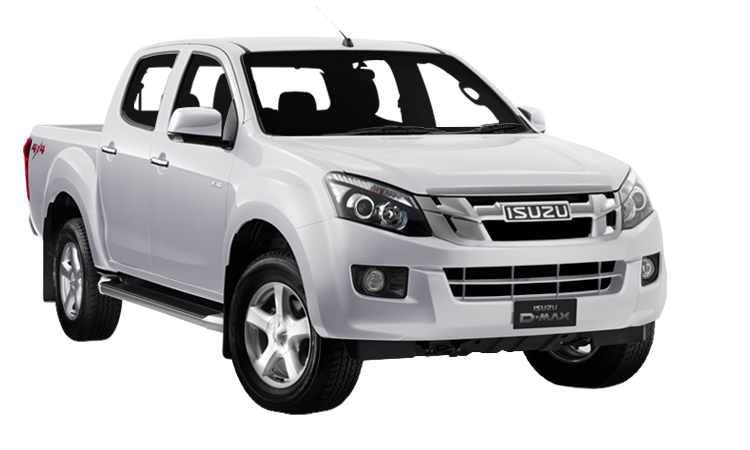

Tüm illere aynı gün içerisinde kargomuz mevcuttur
Isuzu NKR Yedek Parçalar
-
ISUZU NKR TAMPON
ISUZU NKR KARLIK
ISUZU NKR PANJUR
ISUZU NKR PANEL SACI
ISUZU NKR KAPUT
ISUZU NKR ÇAMURLUK
ISUZU NKR ÇAMURLUK DAVLUMBAZI
ISUZU NKR TAMPON BRAKETİ
ISUZU NKR FAR
ISUZU NKR SİNYAL
ISUZU NKR ÖN KAPI
ISUZU NKR ARKA KAPI
ISUZU NKR KAPI FİTİLİ
ISUZU NKR CAM FİTİLİ
ISUZU NKR KAPI AÇMA KOLU
ISUZU NKR STOP LAMBASI
ISUZU NKR ARKA TAMPON
ISUZU NKR BAGAJ KAPAĞI
ISUZU NKR ÖN FREN BALATASI
ISUZU NKR ARKA FREN BALATASI
ISUZU NKR ÖN FREN MERKEZİ
-
ISUZU NKR ARKA FREN MERKEZİ
ISUZU NKR ÖN DİSK
ISUZU NKR ARKA KAMPANA
ISUZU NKR ALT ROTİL
ISUZU NKR ÜST ROTİL
ISUZU NKR ROT BAŞI
ISUZU NKR VİRAJ LASTİĞİ
ISUZU NKR DİREKSİYON POMPASI
ISUZU NKR DİREKSİYON KUTUSU
ISUZU NKR RADYATÖR
ISUZU NKR KALORİFER RADYATÖRÜ
ISUZU NKR ŞAMANDIRA
ISUZU NKR SİNYAL FAR KOLU
ISUZU NKR EL FREN TELİ
ISUZU NKR KİLOMETRE TELİ
ISUZU NKR KAPI KİLİDİ
ISUZU NKR ARKA DEFRANSİYEL
ISUZU NKR KOMPLE ŞANZIMAN
ISUZU NKR MOTOR PARÇALARI
ISUZU NKR SİLİNDİR KAPAK CONTASI
ISUZU NKR TAKIM CONTA
-
ISUZU NKR PİSTON
ISUZU NKR GÖMLEK
ISUZU NKR KRANK
ISUZU NKR YAĞ POMPASI
ISUZU NKR SUBAP TAKIMI
ISUZU NKR SİLİNDİR KAPAĞI
ISUZU NKR PORYA
ISUZU NKR ÇİVİ TAMİR TAKIMI
ISUZU NKR ÖN AMORTİSÖR
ISUZU NKR ARKA AMORTİSÖR
ISUZU NKR MOTOR TAKOZU
ISUZU NKR ŞANZIMAN TAKOZU
ISUZU NKR SİLECEK KOLU
ISUZU NKR AKS
ISUZU NKR FREN ANA MERKEZ
ISUZU NKR SERVO FREN
ISUZU NKR WESTİNGHOUSE
ISUZU NKR SİLECEK CAM SU DEPOSU
ISUZU NKR MARŞ DİNAMOSU
ISUZU NKR ŞARJ DİNAMOSU
ISUZU NKR DEBRİYAJ ÜST MERKEZİ
-
ISUZU NKR DEBRİYAJ ALT MERKEZİ
ISUZU NKR DEBRİYAJ SETİ
ISUZU NKR KABİN TAKOZU
ISUZU NKR ALT SALINCAK
ISUZU NKR ÜST SALINCAK
ISUZU NKR ALT TABLA
ISUZU NKR ÜST TABLA
ISUZU NKR AYNA
ISUZU NKR YAĞ FİLTRESİ
ISUZU NKR YAKIT FİLTRESİ
ISUZU NKR HAVA FİLTRESİ
ISUZU NKR SEDİMENTER
ISUZU NKR TERMOSTAT
ISUZU NKR KEÇE
ISUZU NKR YAĞ MÜŞÜRÜ
ISUZU NKR KİLOMETRE SENSÖRÜ
ISUZU NKR ABS SENSÖRÜ
ISUZU NKR KRANK
ISUZU NKR DİREKSİYON ROT KOLU
Isuzu Yedek Parça Tüm Araçlar
| Marka | Model | ||
|---|---|---|---|
|  |
Isuzu |
Isuzu TFR Isuzu D-MAX Isuzu NKR Isuzu NLR Isuzu NPR75 Isuzu NPR Isuzu NQR |
Isuzu, Mitsubishi ve Toyota araçlarınızın yedek parçası için bizi arayın.
İletişim numaralarımız: